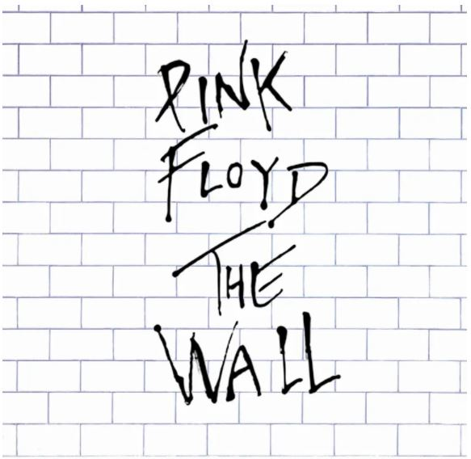

Pink Floyd’s the Wall is one of the most intriguing and imaginative albums in the history of rock music.
Since the studio album’s release in 1979, the tour of 1980-81, and the subsequent movie of 1982,
the Wall has become synonymous with, if not the very definition of, the term “concept album.”
Aurally explosive on record, astoundingly complex on stage, and visually dynamic on the screen,
the Wall traces the life of the fictional protagonist, Pink Floyd, from his boyhood days in post-World-War-II England
to his self-imposed isolation as a world-renowned rock star, leading to a climax that is as cathartic as it is destructive.

All information on this website has been sourced from here